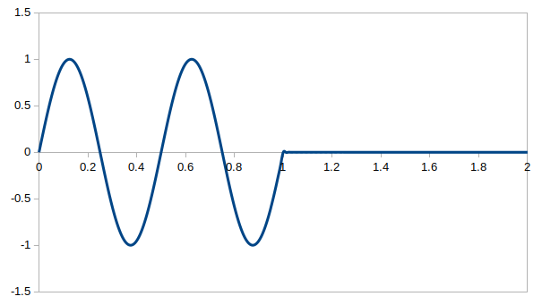

超関数であるデルタ関数(インパルス信号) $\delta(t)$ のフーリエ変換は
\begin{align*} \textrm{F}(w) &= \int_{-\infty}^{\infty} \left \{ \delta(t) \cdot \textrm{e}^{\{- j \cdot w \cdot t \}} \right \} \textrm{d}t \\[10pt] (\text{デルタ関数の性質より}) &= \textrm{e}^{0} \\[10pt] &= 1 \end{align*}です。
は $|f(t)| = 1$ なので絶対可積分ではありませんが、超関数であるデルタ関数を使えばフーリエ変換を求められます。
具体的には
となります。
は絶対可積分ではありませんが、超関数であるデルタ関数を使えばフーリエ変換を求められます。
具体的には例2で $w_1=0$ とした場合なので
となります。
ちなみにこれは $2\pi\cdot\delta(w)$ を逆フーリエ変換することでも証明できます。
具体的には次の通りです。
cos と sin は絶対可積分ではありませんが、超関数であるデルタ関数を使うとフーリエ変換を求められます。
まず cos の方ですが
なので、例2より
\[ \textrm{F}(w) = \pi \cdot \{ \delta(w-w_1) + \delta(w+w_1) \} \]がすぐ求まります。
同様に sin については
\[ f(t) = \sin (w_1 \cdot t) = \frac{ \textrm{e}^{ \{ j \cdot w_1 \cdot t \} } - \textrm{e}^{\{ -j \cdot w_1 \cdot t \} } }{2\cdot j} \]なので、例2より
\[ \textrm{F}(w) = \frac{\pi}{j} \cdot \{ \delta(w-w_1) - \delta(w+w_1) \} \]です。
$a > 0$ を有限な値とした時、単一パルス
\[ f(t) = \begin{cases} 0 \ & t <0 \\[10pt] 1 \ & 0 \leq t \leq a \\[10pt] 0 & t > a \end{cases} \]はもちろん絶対可積分なので普通にフーリエ変換が求められます。
\begin{align*} \textrm{F}(w) &= \int_{0}^{a} \left \{ \textrm{e}^{\{- j \cdot w \cdot t \}} \right \} \textrm{d}t \\[10pt] &= \left [ \frac{\textrm{e}^{\{- j \cdot w \cdot t \}}}{-j\cdot w} \right ]^a_0 \\[10pt] &= \frac{1 - \textrm{e}^{\{- j \cdot w \cdot a \} }}{j\cdot w} \end{align*}ちなみに $w=0$ の時はロピタルの定理を使って
\[ \textrm{F}(0) = \frac{j\cdot a \cdot \textrm{e}^0 }{j} = a \]です。
$\sigma > 0$とし、$u(t)$ を単位ステップ関数
\[ u(t)= \begin{cases} 0 \ & t < 0 \\[10pt] 1 & t \geq 0 \end{cases} \]とした時、指数減衰
\[ f(t) = \textrm{e}^{ \{ -\sigma \cdot t \} } \cdot u(t) \]はもちろん絶対可積分なので普通にフーリエ変換が求められます。
\begin{align*} \textrm{F}(w) &= \int_{-\infty}^{\infty} \left \{ \textrm{e}^{\{ - \sigma \cdot t \}} \cdot u(t) \cdot \textrm{e}^{\{- j \cdot w \cdot t \}} \right \} \textrm{d}t \\[10pt] &= \int_{0}^{\infty} \left \{ \textrm{e}^{ -( \sigma + j \cdot w ) \cdot t } \right \} \textrm{d}t \\[10pt] &= \lim_{a \rightarrow \infty} \left [ \frac{ \textrm{e}^{ -( \sigma + j \cdot w ) \cdot t } }{ -( \sigma + j \cdot w ) } \right ]^a_{0} \\[10pt] &= \lim_{a \rightarrow \infty} \left [ \frac{ \textrm{e}^{ - \sigma \cdot a } \cdot \textrm{e}^{ - j \cdot w \cdot a } }{ -( \sigma + j \cdot w ) } \right ] + \frac{ 1 }{ \sigma + j \cdot w } \\[10pt] \end{align*}ここで $\sigma > 0$ より、上の第1項は0に収束するので
\[ \textrm{F}(w) = \frac{ 1 }{ \sigma + j \cdot w } \]となります。
単位ステップ関数
\[ u(t)= \begin{cases} 0 \ & t < 0 \\[10pt] 1 & t \geq 0 \end{cases} \]のフーリエ変換は例 6 で $\sigma \rightarrow 0$ とすることで
\[ \textrm{F}(w) = \frac{ 1 }{ j \cdot w } \]
となります。
ただし $w=0$ の時は発散するので $w \ne 0$ の範囲だけで考える必要があります。
(別解)
フーリエ変換の性質より
\[ \frac{\textrm{d}}{\textrm{d}t}\ u(t) \]のフーリエ変換は
\[ j\cdot w \cdot \textrm{F}(w) \]で、
\[ \frac{\textrm{d}}{\textrm{d}t}\ u(t) = \delta(t) \]なので、両辺をフーリエ変換すると例1より
\[ j\cdot w \cdot \textrm{F}(w) = 1 \]よって
\[ \textrm{F}(w) = \frac{ 1 }{ j \cdot w } \]となります。
ある信号 $f(t)$ のフーリエ変換を $\textrm{F}(w)$、別の信号 $g(t)$ のフーリエ変換を $\textrm{G}(w)$ とします。
すると畳み込みの定理より $h(t) = f(t)\cdot g(t)$ のフーリエ変換は
となります。
ここで特に
の時は
\begin{align*} \textrm{H}(w) &= \frac{1}{2\pi} \cdot \int^{\infty}_{-\infty} \textrm{F}(\xi) \cdot \delta (w+a-\xi) \ \textrm{d}\xi \\[10pt] &= \frac{1}{2\pi} \cdot \int^{\infty}_{-\infty} \textrm{F}(\xi) \cdot \delta (\xi - (w+a)) \ \textrm{d}\xi \\[10pt] &= \frac{\textrm{F}(w+a)}{2\pi} \end{align*}よって例4と例6から正弦波の指数減衰
\[ f(t) = \sin(w_1 \cdot t) \cdot \textrm{e}^{ \{ -\sigma \cdot t \} } \cdot u(t) \]は(ただし $\sigma > 0$ )
\begin{align*} \textrm{F}(w) &= \frac{\pi}{2\pi \cdot j}\cdot \left \{ \frac{1}{\sigma + j\cdot (w-w_1)} - \frac{1}{\sigma + j\cdot (w+w_1)} \right \} \\[10pt] &= \frac{1}{2j}\cdot \frac{ (\sigma + j\cdot w + j\cdot w_1) - (\sigma + j\cdot w - j\cdot w_1) } { (\sigma + j\cdot w - j\cdot w_1)\cdot (\sigma + j\cdot w + j\cdot w_1 ) } \\[10pt] &= \frac{1}{2j}\cdot \frac{ 2\cdot j\cdot w_1 }{ (\sigma + j\cdot w)^2 + w_1^2 } \\[10pt] &= \frac{ w_1 }{ (\sigma + j\cdot w)^2 + w_1^2 } \\[10pt] \end{align*}となります。
正弦波 $\sin(w_1\cdot t)$ の周期を $\textrm{T} = 2\pi/w_1$ [秒] とします。
$n$ を 1 以上の整数としたとき次の信号を考えます。
例えば、$w_1 = 4\pi$ [rad/秒]、$\textrm{T} = 1/2$[秒]、$n = 2$ [回]の場合は次のグラフになります。
$w_1 = 4\pi$ [rad/秒]、$\textrm{T} = 1/2$[秒]、$n = 2$ [回]

今回考える $f(t)$ は例5で考えた単一パルス(ただし$a = n\cdot \textrm{T}$)を sin にかけた式になっていますので、例8と同様にデルタ関数の畳込み演算を利用できます。
具体的には例4と例5より
となります。
なお $w = \pm w_1$ の時はロピタルの定理より
\begin{align*} \textrm{F}(\pm w_1) &= \lim_{w \rightarrow \pm w_1} \frac{w_1}{-2w} \cdot \left ( j \cdot n \cdot \textrm{T} \cdot \textrm{e}^{ \{ - j \cdot n \cdot \textrm{T} \cdot w \} } \right ) \\[10pt] &= \mp \frac{1}{2} \cdot \left ( j \cdot n \cdot \textrm{T} \cdot \textrm{e}^{ \{ \mp j \cdot n \cdot 2 \pi \} } \right ) \\[10pt] &= \mp \frac{j \cdot n \cdot \textrm{T}}{2} \end{align*}
です。